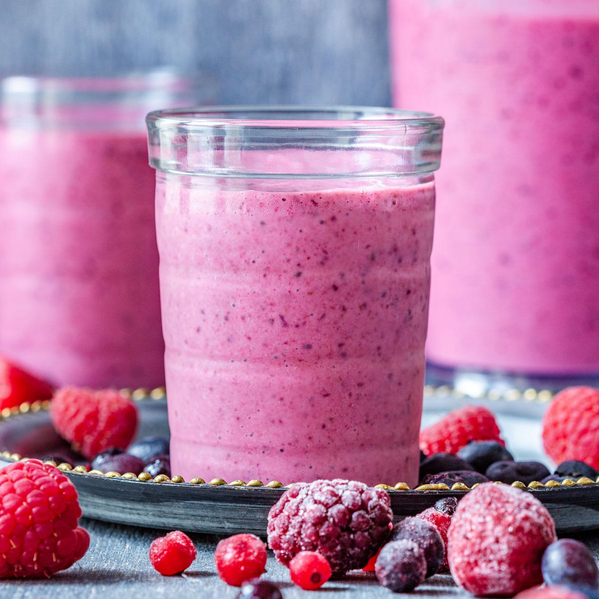

Mixed Berry Smoothie
Recipe courtesy of tasty.co

Description:
Bursting with the sweet and tangy flavors of mixed berries and greek yogurt,
this smoothie is a nutritious and delicious addition to your day.
Perfect for meal prep, this smoothie (or its ingredients) can be made in
advance and frozen for a quick and easy breakfast.
ingredients:
- 1 cup frozen blueberry
- 1 cup frozen strawberry
- 1/2 cup frozen blackberry
- 1/2 cup frozen raspberry
- 1 1/2 cups milk of choice
- 1 cup plain greek yogurt
- optional ice, to preference
Steps:
- If your berries are not frozen, seal and store them
in a freezer bag in the freezer for up to 8-12 months.
- Once frozen, put the berries, milk, greek yogurt, and ice
(if using) into a blender. Blend until it reaches a smooth consistency. Enjoy!